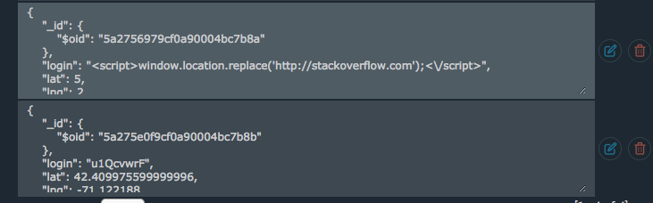
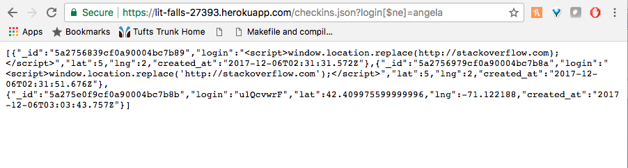
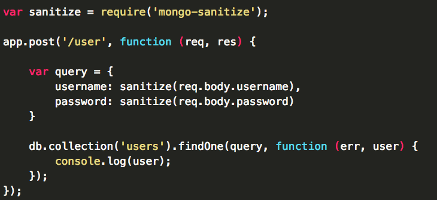
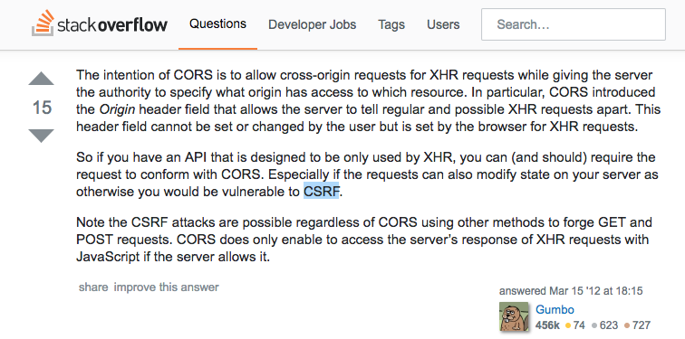
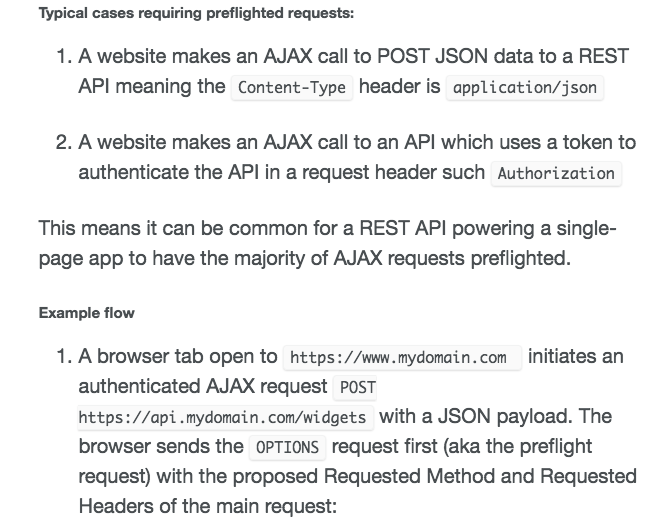

I was hired to find at least three security vulnerabilities in another student's web application.
To test for Cross Site Scripting vulnerabilities, I used curl to inject JavaScript as a request parameter to see if the browser would run it.
I also tested to see if there was any security in place to maintain privacy. I used the I tested to see if a noSQL injection was possible with the MongoDB not equal ($ne) operator as one way of testing for this
I could test for those vulnerabilities without looking at my partner's code and using curl or a browser. To find the rest of the flaws in my partner's code, I read the code itself.
When I injected the line "<script>window.location.replace('http://stackoverflow.com');</script>" as my login, the page redirected to stackoverflow.com.
I found that I could easily access the login and location of other users by using my browser and typing in /checkin.json?login[$ne]=username. The page then printed out the information of every other user that did not have the login "username," which is a severe privacy issue.
Finally, by looking at my partner's code, I saw that using POST for /sendLocation, there's the line "response.header("Access-Control-Allow-Origin", "*");" The "*" asterisk means that anyone could access /sendLocation.
Also, I realized that there was no protection that prevented others from overloading the server using echo curl..., which means it would be possible to add a lot of junk data, go over the memory limit (which could just mean that the person's credit card would be charged), or maybe the server couldn't handle the number
The cross site scripting issue occurs because the user is allowed to enter anything for the login, including JavaScript, because this web app trusts user data and does not strip it of certain characters. This occurs on heroku.com/sendLocation. This is a high severity issue because someone could easily inject JavaScript that redirects to another page. The user could be unaware of this and enter in private information, which would give sensitive data to a hacker.
I also tested to see if, using the MongoDB not equal operator ($ne), /checkin.json would send all the information of the users with a login not equal to the input (for example, if I typed https://lit-falls-27393.herokuapp.com/checkins.json?login[$ne]=angela into my browser, the web app would send all the information of users who do not have the login "angela", which poses a security risk, as that information includes the location of those people. This risk is severe as well. Not only cou
A way to fix this is using mongo-sanitize, which would strip out any keys starting with "$." Also, using Mongoose would solve the problem, as it automatically converts passed in objects to strings. 
Finally, I found the issue of allowing Cross-Origin Resource Sharing (CORS), which allows any site to make a request. This wouldn't be a security issue if it weren't for the fact that the site stores information that should be private, such as login and location. Because this site is designed to allow access to /sendLocation only by using XHR requests, there is no need for CORS, and especially if there is verification involved, the websote could be vulnerable to Cross-Site Request Forgery. This is a severe vulnerability because this allows a third party to act as a user and target state-change requests.
This could be solved, at least from what I've researched, by having the user send a preflighted request, as this web app takes POST requests from the user. The client-side sends POST request that includes a login and location, and the server authenticates it. 